portfolio
rul ned og se,
hvad jeg har arbejdet på
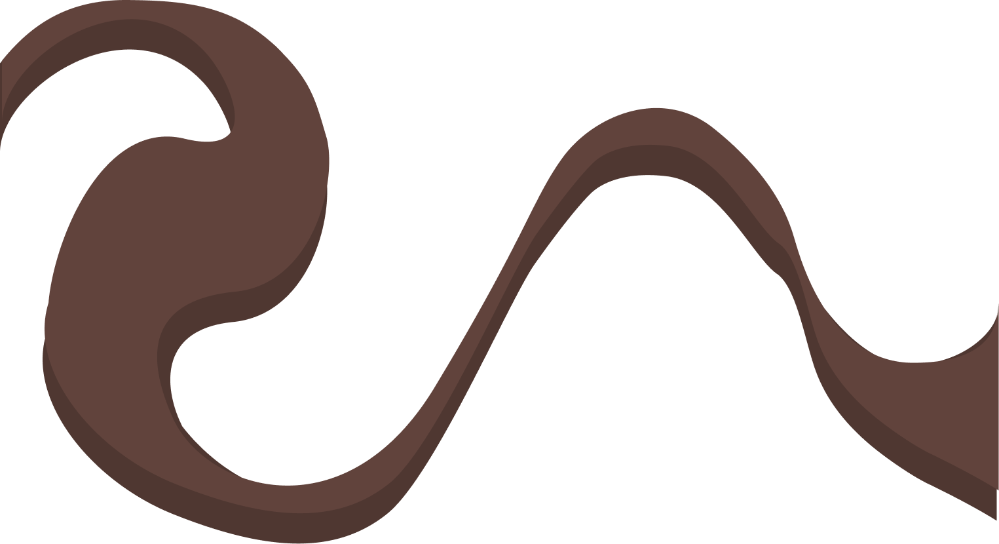
elgigantens 30 års
plakat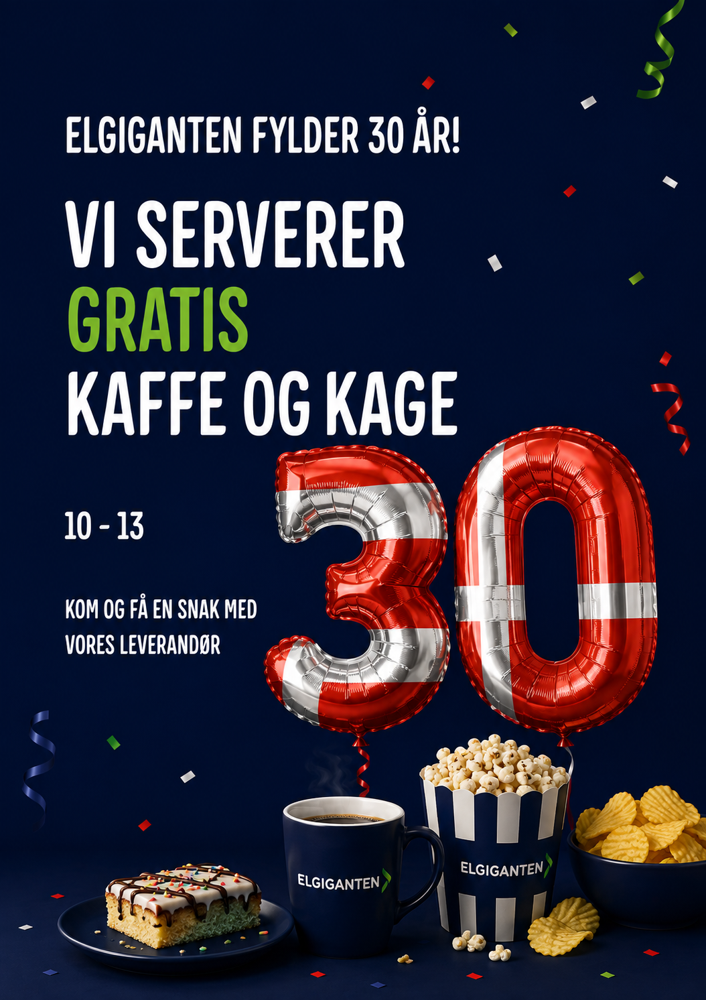
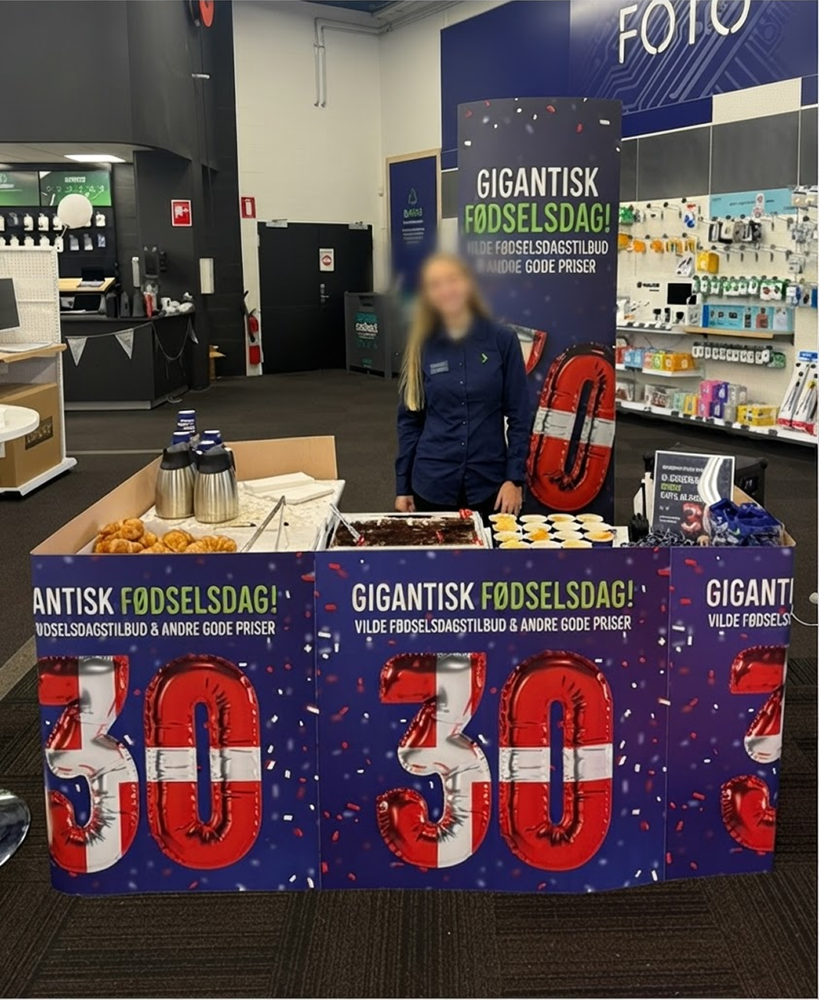
I forbindelse med Elgigantens 30 års fødselsdag designede jeg en plakat til butikken i Viby J.
Plakaten skulle skabe blikfang, passe til Elgigantens visuelle udtryk og samtidig formidle budskabet om butikkens fødselsdagsfejring på en måde som matcher brandets visuelle stil.
kreakassen.dk
wordpress skole caseKreaKassen er en fiktiv webshop, der gør det nemmere for børnefamilier at få mere kreativ samvær.
Gennem brugerresearch og personaer undersøgte vi målgruppens behov og udviklede et koncept med kreative aktivitetskasser til forskellige årstider og højtider.
Jeg bidrog særligt til konceptudviklingen og det visuelle udtryk.
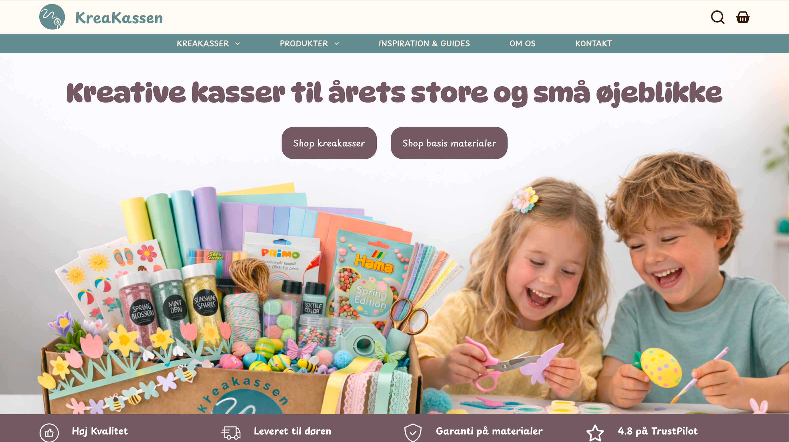
character design
fritid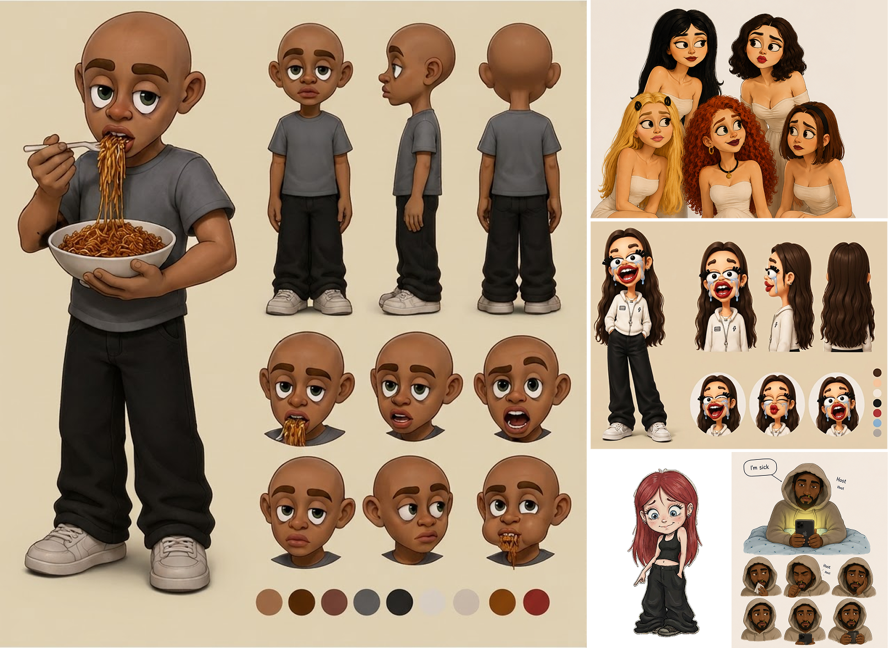
I min fritid kan jeg godt lide at tegne mennesker på sjove og anderledes måder – og derefter udvikle dem til karakterdesigns.
Jeg synes, det er spændende at give hver karakter sit eget udtryk, personlighed og små detaljer.
museum ovartaci
skole caseMuseum Ovartaci var et projekt, hvor opgaven var at udvikle en digital og interaktiv løsning som et ekstra lag til den fysiske udstilling.
Her arbejdede vi med UX, interaktionsdesign, brugercentreret design samt udvikling i HTML, CSS og JavaScript.
Jeg lærte blandt andet hvor svært det er at formidle et budskab klart gennem design og arbejde med brugerfeedback.
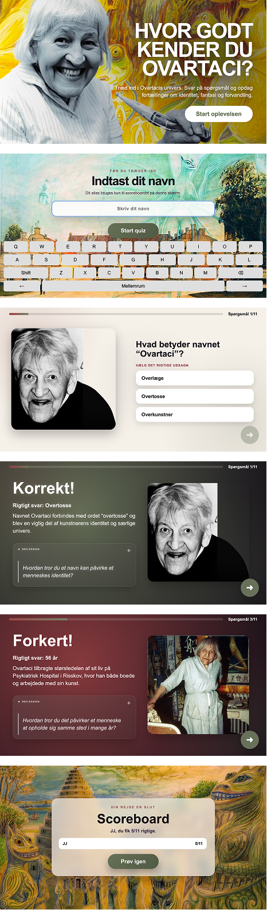

storcenter nord
interaktiv touchskærm skole case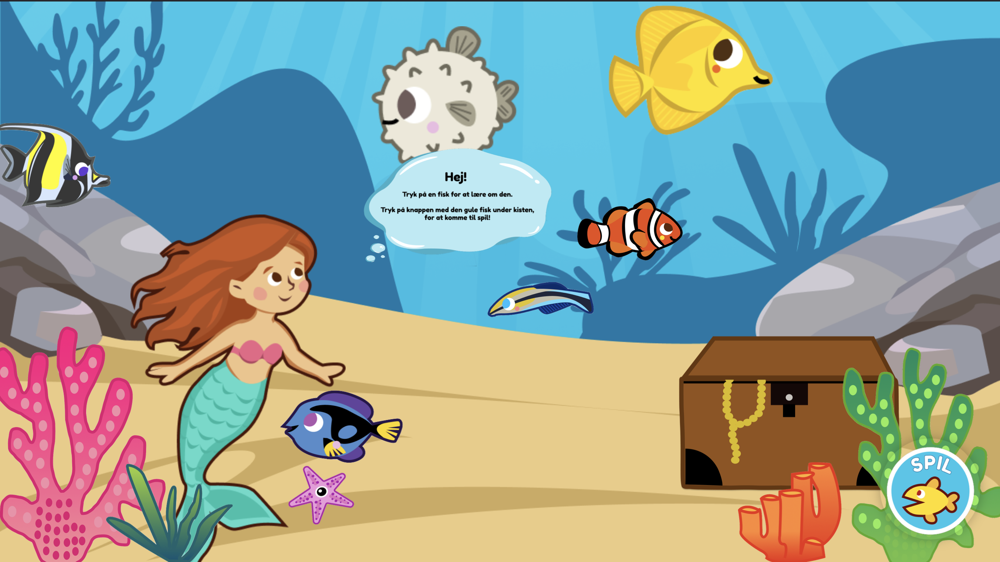
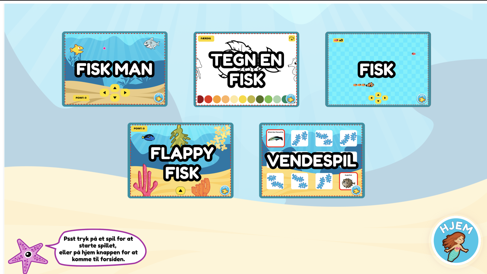
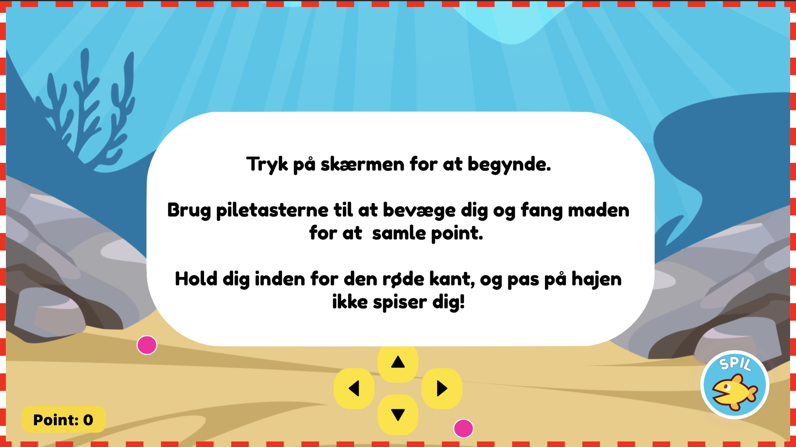

Storcenter Nord akvariet var et projekt, hvor vi skulle udvikle et bud på en mere spændende og interaktiv oplevelse til den eksisterende touchskærm.
Vi skulle desuden udarbejde en flyer som brugeren kunne tage med sig efter besøget.
Jeg arbejdede med event-baseret JavaScript og fik mere erfaring med at kombinere UX/UI og multimediale løsninger.
kaspers instagram
fritidsprojekt med brorMin lillebror er cykelrytter, og sammen har vi et lille fælles fritidsprojekt med hans Instagram.
Sammen synes vi, det er sjovt at filme og dokumentere hans ture og løb – og så redigerer jeg dem sammen til små reels, vi kan se tilbage på.
Det er ikke noget, jeg er ekspert i, men jeg synes det er sjovt at klippe vores videoer sammen og derefter se hans venner og cykelkammerater kommentere på det.
Se min brors Instagram her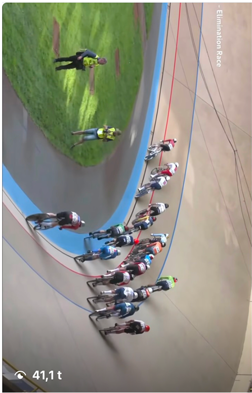
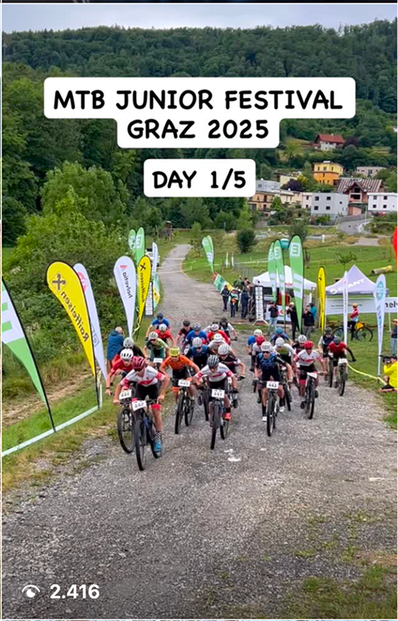
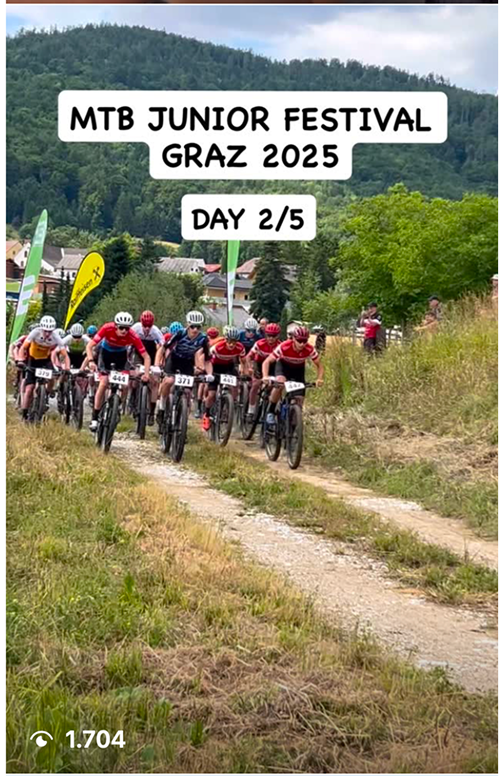
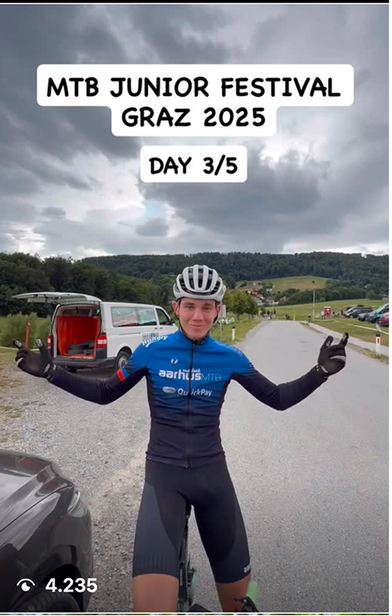
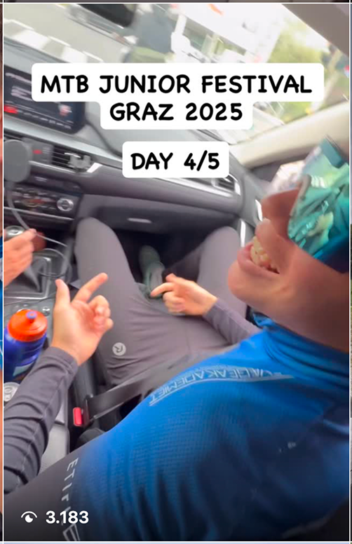
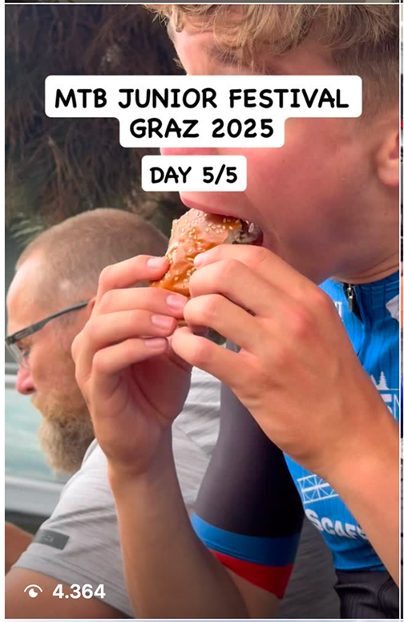